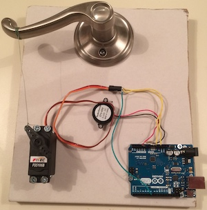

Employment
My Work Experience
My Work Experience
I have a wide range of experience in the computer engineering, computer science, and academic fields. I've worked as a validation engineer, software engineer, full-stack web developer, technology assistant, and teaching assistant for 5 different companies/organizations, and am ready and willing to learn any skills necessary for whatever task I am assigned. Please contact me if I can be of any service to you or your company!
2015 - PRESENTIntel Corporation

I validate the correctness of the Xeon products and ensure that they meet the desired specifications as defined by Intel. This involves reading and understanding technical documentation, and writing tests to validate specific features and/or edge cases. This job also requires effective collaboration with several other US and international Intel sites.
- First employee in Columbia to implement the team’s focus test tool (path clearing).
- Owner of the focus test tool and running all focus test content.
- Chairing weekly international meetings within the first year in this role.
- Authored a full test library for validation of a Xeon-only feature set not covered by other tools.
- Completed extensive training via international travel and on-site exams.
www.Intel.com
2012 - 2015360 Quote LLC

I worked full-stack across several of the company's sites as specific needs arose for each one. Specifically, I worked on improving, maintaining, and launching the redesigned Exercise.com fitness website, as well as creating and beginning deployment of the new Bookster.com site designed for independent authors. Skills I learned included Ruby on Rails, Javascript/Jquery, and HTML/CSS/SASS just to name a few.
- Implemented site-wide standards for page design - fonts, margins, colors, etc.
- Primary owner for all Photoshop wireframe work.
- Redesigned and implemented a new checkout system for online purchases.
www.Exercise.com
www.Bookster.com
2013 - 2015Clemson University
I worked as a teaching assistant for the Electrical and Computer Engineering department, teaching 3 lab sections every semester. 2 semesters (6 total sections) of Microcontroller Interfacing (300 level), and 2 semesters (6 total sections) of x86 Assembly Language (200 level). I was responsible for effectively communicating the material, assisting students in completing the lab assignments, and assessing their work via the grading of their lab reports and other metrics.
- Taught 6 lab sections for Microcontroller Interfacing (ECE 372).
- Taught 6 lab sections for Computer Organization/x86 Assembly (ECE 273).
- Graded weekly labs, weekly lab reports, and final exams.
- Received consistently high ratings from students in lab competency, communication skills, and organization.
www.Clemson.edu
2010 - 2013Bob Jones University

I worked as a technology assistant, helping students with computer-related coursework and completing various tasks for professors. I was also responsible for keeping the labs in order, helping visitors find their way around, and solving the lab's computer problems as they arose. I was promoted to crew chief after 2 years, granting me responsibility over as many as 11 staff members, and also the responsibility of arranging worker schedules and enforcing lab rules and policies.
- Trained and managed as many as 11 staff members.
- Promoted to Crew Chief after only 2 years with the company.
www.BJU.edu
SUMMER 2011AAI Textron

I worked as a software engineering intern for the F-35 Joint Strike Fighter Maintenance Simulator program. I was responsible for testing simulation scenarios for correctness, writing task lists/technical documents for instructors, and testing the continuously evolving simulation environment for bugs.
- Developed and tested F-35 maintenance training simulator lessons.
- Wrote task lists and technical documentation for training instructors.
www.AAICorp.com
SUMMER 2010AAI Textron
I worked as a software engineering intern for the TH-57 cockpit simulator R&D program. My main task was researching virtual terrain data options and ways to scale that data for use in the simulator. I was also tasked with recreating the simulated cockpit's terrain display within the program to ensure that it was as accurate as possible.
www.AAICorp.com
360 Quote LLC
My Role
I worked full-stack across several of the company's sites as specific needs arose for each one. Specifically, I worked on improving, maintaining, and launching the redesigned Exercise.com fitness website, as well as creating and beginning deployment of the new Bookster.com site designed for independent authors. I was involved in both the back-end and front-end coding; back-end for running the site and computing the data, and front-end for displaying the information in an understandable and appealing way. Skills I learned included Ruby on Rails, Javascript/Jquery, and HTML/CSS/SASS just to name a few. During the implementation of Bookster I spent a great deal of time working on the site's styling, which mostly entailed splicing photoshop designs and replicating them perfectly on the actual site. I also helped implement Bookster's overall functionality and solve problems unforseen in the initial design.
Accomplishments:
- Implemented site-wide standards for page design - fonts, margins, colors, etc.
- Primary owner for all Photoshop wireframe work.
- Redesigned and implemented a new checkout system for online purchases.
Skills I learned include:
- Ruby on Rails
- HTML / CSS / SASS
- Jquery / CoffeeScript / Javascript
- PostgreSQL
- Backbone.js
About The Company
360 Quote is a small company dedicated to creating excellent websites that are new and innovative. Their sites fulfill a wide variety of needs, including personal fitness, specialized calculators, web domain registration, and author webpage hosting.
Their Websites
Education
2013 - 2015Clemson University - Clemson, SC
Master of Science in Computer Engineering
I completed a master's degree (thesis track) while working as a teaching assistant at Clemson University. My thesis, entitled Exploring the Effects of Multimedia Content on a Question and Answer System, is detailed here.
Extracurriculars included Cross Impact where I served as their Secretary and Treasurer, and ACM and IEEE where I was a member of their respective competitive programming teams.
2009 - 2013Bob Jones University - Greenville, SC
Bachelor of Science in Computer Engineering
I completed a bachelor's degree in Engineering while also working as a computer lab technology assistant, including a year as the crew chief. My coursework focused on math, programming, and science, but was also well rounded by BJU's strong liberal arts core. I was involved in many extracurricular activities, including the BJU intermural competitive programming team, recreational athletics, and local volunteer work.
While at BJU I was a part of several major academic projects, culminating in my senior design project, 80Sim86. Please see my projects page for detailed information on each of the projects.
- 80Sim86 Assembly Language Simulator
- Project STRATOS weather balloon sent to near-space
- Hero[0] computer game
Projects
2014 - 2015Master's Thesis
I studied how the presence of multimedia in a question that was posted online affected the quality and correctness of answers. Question types included text-only, text with an image, image-only, and audio only. I also studied the security and privacy risks involved with the incorporation of this multimedia into a question and answer website. These risks included loss of privacy through image metadata and facial recognition, and security risks to the website though illegal, malicious, and explicit content. The study was conducted using my research website, MultiQuery (Q/A Project), described below.
Click here to download a copy of my thesis
2013 - 2015MultiQuery Website
My research in preparation for my Masters Thesis involved building a website for a question/answer social network. The site allows users to ask/answer questions from friends and other users from various categories, and by using several forms of multimedia (text, image, and audio). The site was built using Ruby on Rails with a PostgreSQL database, and all work was done by me and another student. The site was developmental, and future versions will incorporate more aspects of the research such as rating algorithms and the forwarding of questions to the best users.
Click here to visit the website for this project
2014Knock-Activated Door Opening Device

I and another graduate student designed a Knock-Activated Door Opening Device that uses an Arduino Uno to detect knocking patterns on the door, and will pull down the door handle when the correct pattern is detected. Research was done to determine a proper and secure threshold for the knocking pattern input, and we authored an 8 page paper detailing our design, the finished product, and our results. This paper was voted to be the best paper among the entire class of graduate students and their projects.
201380Sim86 Assembly Language Simulator

My undergraduate senior project was an Intel 8086 Assembly Language simulator named 80Sim86. The focus and goal was to write a simulator in C++ that could be used to help students quickly learn the Intel assembly language in a simpler environment than current commercial software. With this program, the student is able to select one of 32 supported instructions via a select box, input one or more parameters/operands necessary for the given instruction, execute the instruction, and observe how the memory, registers, and named memory locations are affected. This interface allows for learning by experimentation without requiring the student to know complicated syntax or write an entire program in order to run a simple command through a debugger.
2011Project STRATOS - Weather Balloon Into Near-space

I and a team of roughly 12 other students designed, manufactured, and launched a 'package' with video camera to the edge of space via a weather balloon. Our payload also included a cellular phone for GPS tracking and an external battery to extend the life of the video camera during the long flight. We succeeded in both filming the edge of space at roughly 100,000 feet above the surface of the earth, and also recovering the device roughly 100 miles away once it had returned to earth.
Our payload was protected by a specially formed styrofoam box, hand warmers to keep the electronics from freezing, and a plexiglass window to allow our video camera to capture footage. My portion of the project focused on the GPS tracking, using a cellular phone and an online tracking service to pinpoint the location of our device as it both ascended from and returned to earth. I also served as the photographer on the recovery mission and drove one of the two recovery vehicles that enabled us to get to our device's remote location.
2010Hero[0] Computer Game

I and two other students worked together to create a computer game for a class project using the C++ language and the Borland IDE. The gameplay was similar to a Zelda style 2D maze/dungeon crawler, but with personal touches and inside jokes from our programming class thrown in. Over the course of about six weeks, we designed the game from the ground up including the class structure, gameplay, graphics, and storyline. I focused mainly on the programming side of the project, implementing features such as collision detection, map navigation, and points/scoring. The game included a graphical main menu with high scores, saved games, several playable characters, and even a 'cheat'/invincible mode.
About Me
INFOBasic Info About Me
I am currently a Server System Validation Engineer for Intel in the Columbia, SC area. I graduated with a Master's degree in Computer Engineering from Clemson University, and a Bachelor's degree in Engineering from Bob Jones University. I enjoy both the challenges of the software/programming side and the hands-on work involved with assembling and maintaining hardware. I have a special interest in x86 assembly, C, and other low-level programming, as it combines both software and hardware. I also enjoy web design work, both back-end and front-end.
I have a wide range of work experience, working for both large corporations and small companies in the technology and educational fields. I love learning, especially when it involves computers, and am willing to tackle any obstacle presented by a new job.
Programming skills: x86 Assembly, C / C++, Git, Ruby on Rails, HTML and CSS / SASS, Javascript / JQuery / CoffeeScript, PostgreSQL
INTERESTSMy Interests And Hobbies
My personal interests include trail running, cooking, computer magazines, tech news, and bargain hunting. I currently reside in Columbia, SC, but my hometown where I spent most of my life growing up is Charleston, SC. I am a born-again Christian with the goal of doing my best on any task while being entirely ethical and honest.